Give a high-level overview of what you implemented in this homework. Think about what you've built as a whole. Share your thoughts on what interesting things you've learned from completing the homework.
Task 1: Drawing Single-Color Triangles
To rasterize a triangle, I first framed the triangle using the three vertices I knew about. This way, the for loop would iterate through fewer pixels to achieve the same goal, otherwise it would have to iterate through many pixels that are obviously not inside the triangle. The for loop selects possible pixels, and then uses the calculation method used in class to determine whether the point is inside the triangle. If it is inside the triangle, the sample_buffer is used directly to set the pixel to the given color.
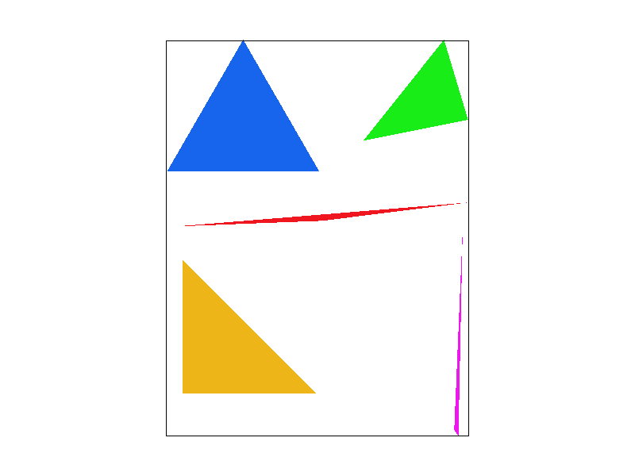
Rasterize Triangle
Task 2: Antialiasing by Supersampling
In order to perform super sampling, I first changed the set methods such as set_sample_rate because when calling, the size of sample_buffer needs to be multiplied by sample_rate. Then I divide 1 by sqrt(sample_rate) to get how many parts I need to divide the length and width of a pixel into for judgment. I iterate all the pixels in the bounding box I selected through two for loops, and then use two more for loops to get more detailed pixels in sample_buffer. Then use the judgment formula to determine whether these pixels are inside the triangle. During this period, all the colors of super_sampling iterations in this pixel are added and stored in a color variable. When these two for loops end, the elements in the obtained color are divided by sample_rate to obtain the required color of this pixel. Supersample can obtain more satisfactory pixel colors through more detailed methods to make the boundaries of pixels transition and reduce the sense of aliasing.
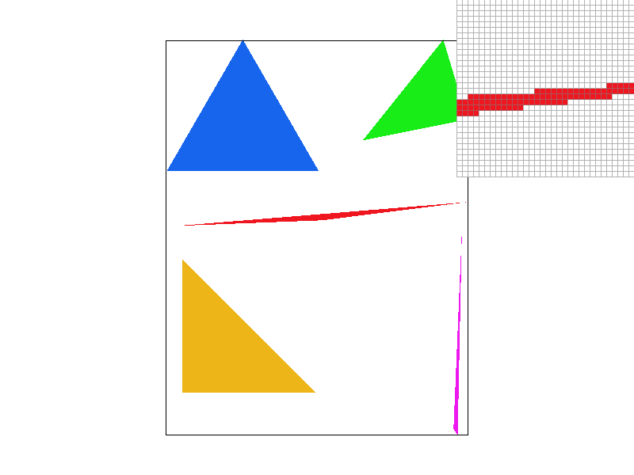
Sample Rate = 1
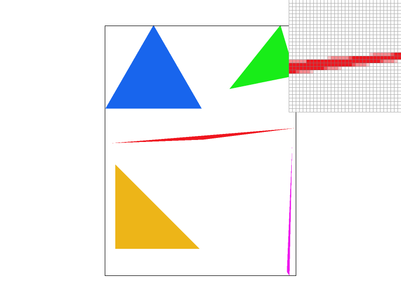
Sample Rate = 4
Sample Rate = 16
Task 3: Transforms
I wanted the cube man to exercise with dumbbells, so I added some cubes and moved them over the cube man's hands, changing the shape and position of the cube man's arms a bit.
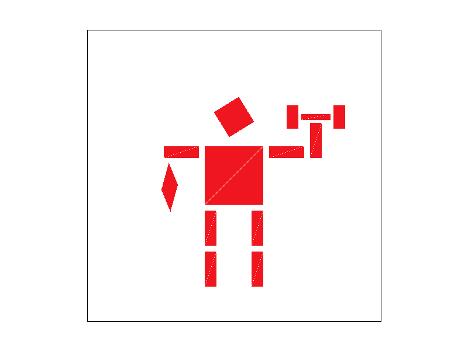
Power!
Task 4: Barycentric coordinates
Each point p in a triangle has a unique barycentric coordinate (u, v, w), which satisfies \(ua+vb+wc)\ = p, where a, b, c are the vertices of the triangle. We can use this feature to get the corresponding color of each point in the triangle using u, v, w as the ratio of the color, and we can get a triangle with very smooth color changes.
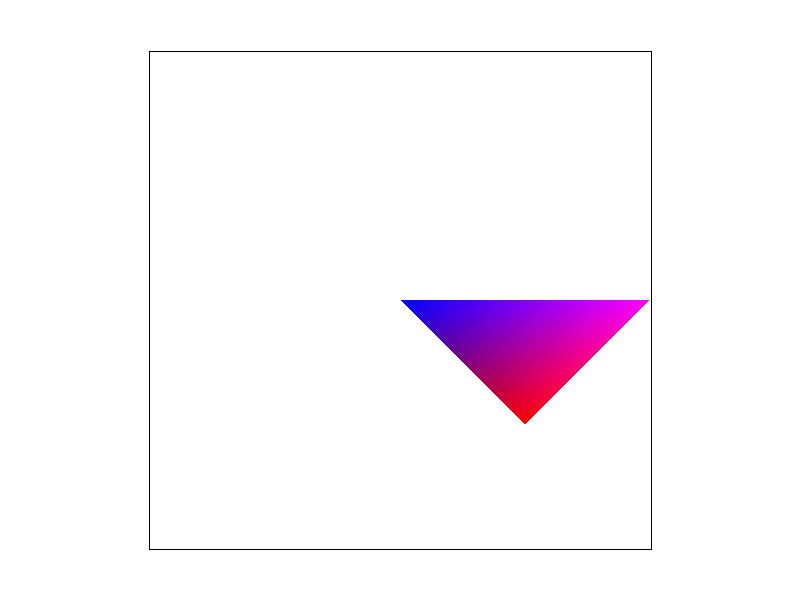
Smooth Color Triangle
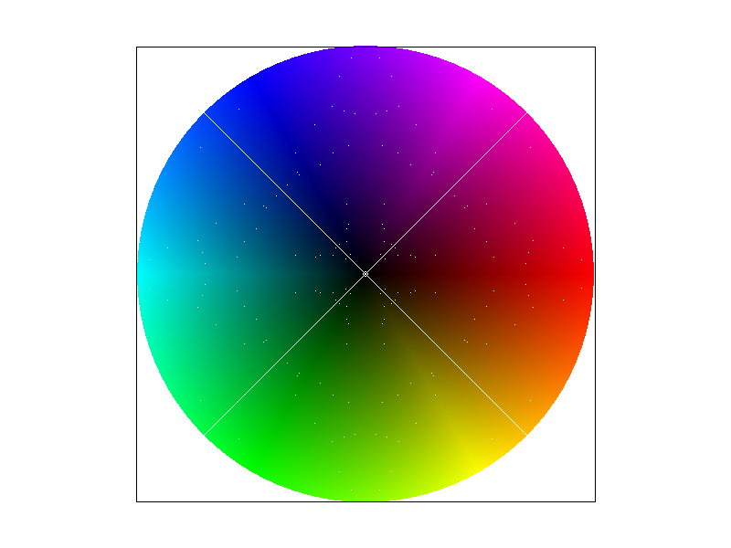
Color Wheel
Task 5: "Pixel sampling" for texture mapping
This is very similar to the previous rendering of triangles. Previously, the color of the triangle was directly given to us, while the color of the texture had to be found by ourselves. sample_nearest outputs the color of the texel closest to the pixel. sample_bilinear outputs the average color of the 4 texels closest to the pixel. sample_nearest will have a higher resolution, but the anti-aliasing and over-sample prevention capabilities are not as strong as bilinear.
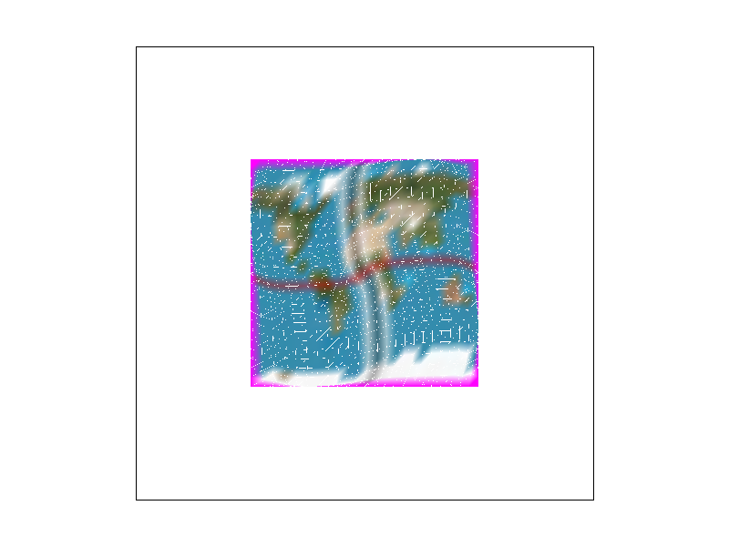
Nearest with Sample_rate = 1
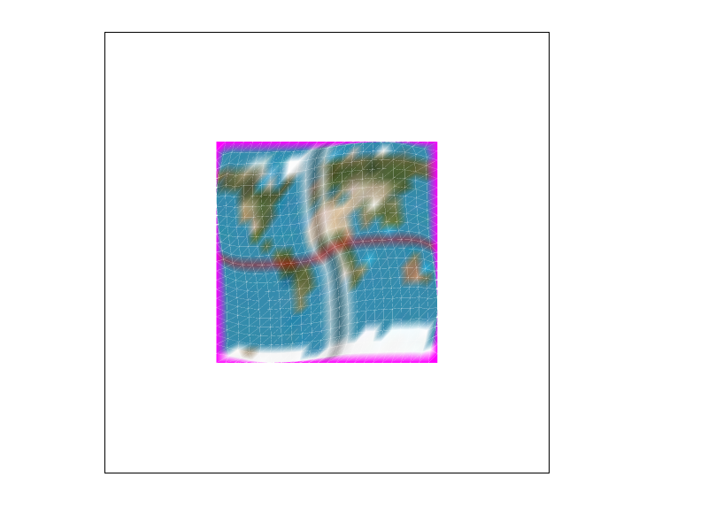
Nearest with Sample_rate = 16
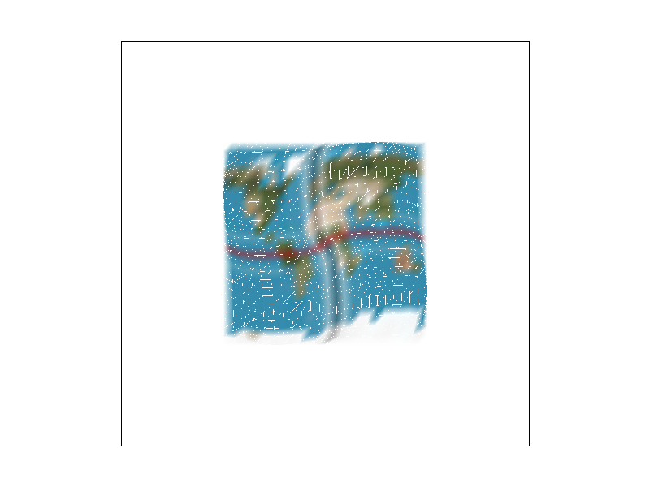
Bilinear with Sample_rate = 1
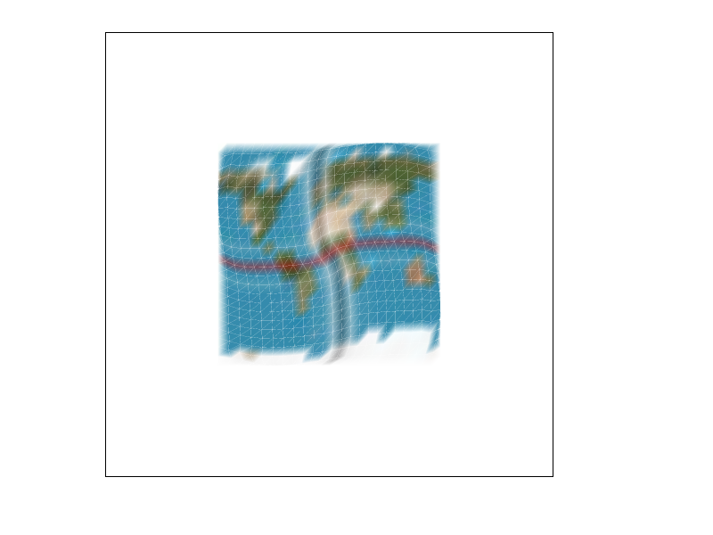
Bilinear with Sample_rate = 16
Task 6: "Level Sampling" with mipmaps for texture mapping
Mipmap is to divide the texture into different levels of textures first. When encountering the appropriate level, different textures are used to achieve better results. It can effectively prevent over sampling and ensure the resolution of the near part of the screen. It is also very simple to implement. For 0 level, just output 0level. For nearest, use the formula in the course to get d and then use the square root of d to judge the level. Bilinear is more complicated. I chose to find the color of the current required level through d first and then find the color in d+1level. Then, through the ratio obtained by \(d-level)\, the colors obtained from the two levels are added together to get the color to be output. Pixel sampling is slower but occupies less memory. It can achieve better anti-aliasing of graphics. Level sampling is faster but occupies more memory. It can better complete the anti-aliasing of textures but cannot optimize the aliasing of graphics. The number of samples per pixel will be very slow, and the memory usage also depends on the number of samples and other methods used at the same time. When the number of samples is high, it can achieve better anti-aliasing effect.
Zero and Nearest
Zero and Linear
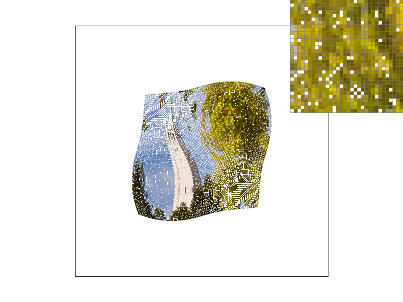
Nearest and Nearest
Nearest and Linear
(Optional) Task 7: Extra Credit - Draw Something Creative!